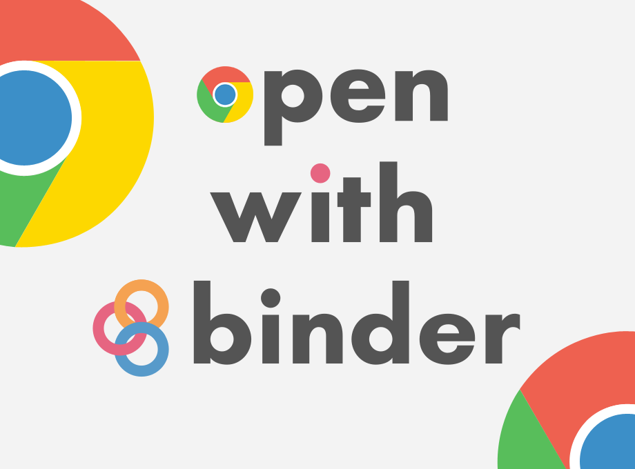

Open in Binder Chrome Extension
Two weeks ago I was pleased to announce the release of the Open-with-Binder for Firefox extension.
After asking on twitter if people were interested in the same for Chrome (29 Yes, 67 No, 3 Other) and pondering whether or not to pay the Chrome Developer Fee for the Chrome App store, I decided to take my chance and try to publish it last week.
I almost just had to use Mozilla WebExt Shim for Chrome, downgrade a few artwork from SVG to PNG (like really??) and upload all by hand, like really again ?
The Chrome Store has way more fields and it is quite complicated – compared to the Mozilla Addons website at least – It is sometime confusing whether fields are optional or not, or if they are per addons on per developer ?
It does though allow you to upload more art that will be show in a store which that looks nicer.
Still I had to pay to go through a really ugly crappy website and had to pay for it to publish a free extension. So Mozilla you win this.
Please rate the extension, or it may not appear in search results for others AFAICT:
 install Open with Binder for chrome
It works identically to the Firefox one, you get a button on the toolbar and click on it when visiting GitHub.
Enjoy.